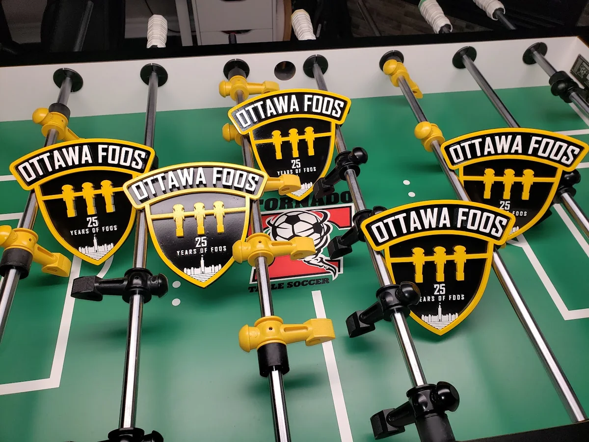
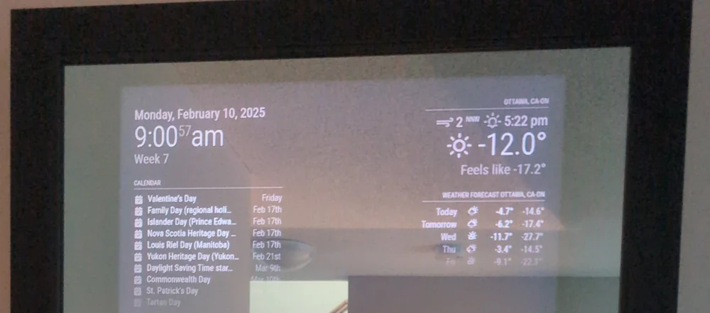
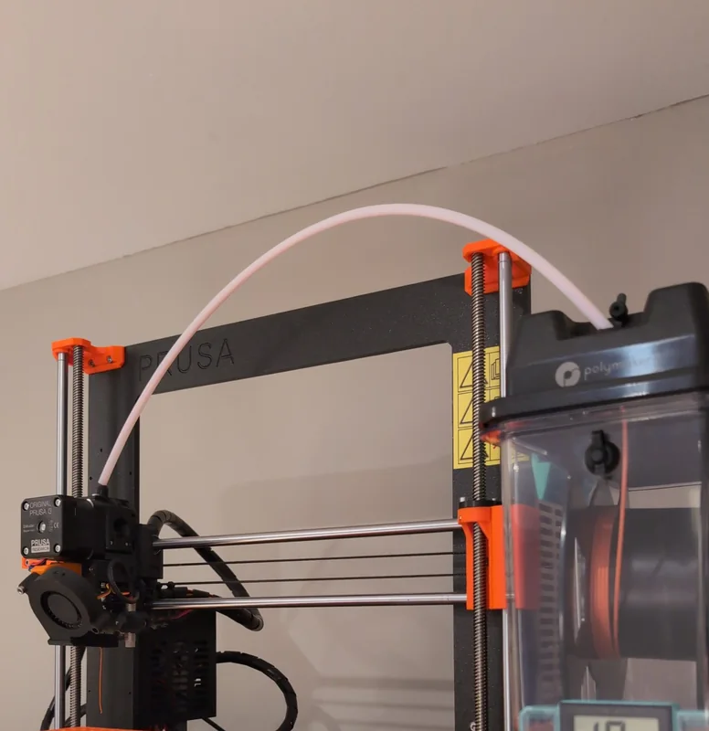
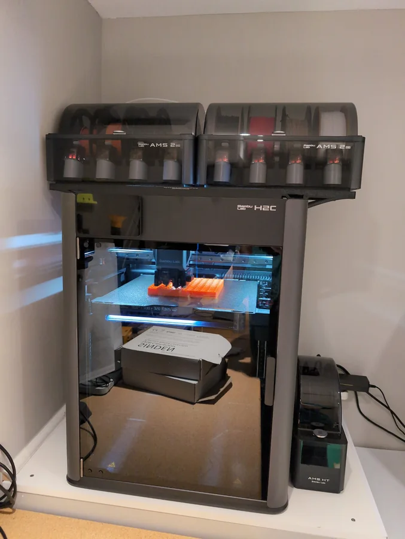

Software & solution architecture
Define system boundaries, decide what belongs where, and turn business requirements into a design the team can deliver and operate.
Danny Luu Canada
I design software systems, help engineers make technical decisions, and trace production issues across code, data, and infrastructure. Outside work, I make things with a 3D printer and enjoy photography and video editing.
Expertise
I can help when a system needs to change, an integration keeps failing, or a team needs a second opinion before committing to a design.
Define system boundaries, decide what belongs where, and turn business requirements into a design the team can deliver and operate.
Build backend services and APIs that connect applications. Decide how data moves between systems and how they recover when a dependency fails.
Trace recurring failures, latency, and data issues across systems. Work out which parts to change first and how to move an existing application forward in stages.
Review designs and code, help teams weigh trade-offs, and mentor developers as they take on more of the technical decisions.
20 min to milliseconds
I traced a page taking roughly 20 minutes to load to oversized data transfer objects. Reworking those objects brought the load time down to milliseconds.
30% to 80%+
My team raised test coverage from around 30% to more than 80%.
500+ stores
I helped automate digital flyer data for a retail platform that served more than 500 stores.
Bachelor of Computer Science, Carleton University SAP Commerce Cloud Developer (Professional) and SAP Commerce Business Analyst (Associate)
Featured work
A Flutter project for athletes in Olympic-style precision pistol sport.
I started building it after noticing how much information I had to piece together across competition references, score tools, and session notes. The product challenge is making each of those tasks easy to find and use on a phone.
Independent project in development
Read the case studyMy story
Apparently, I took my toys apart as a kid to see how they worked. Putting them back together was another story.
Games got me into computers. I built my own PC, taught myself HTML, CSS, and JavaScript, and hosted a Ragnarok Online server. It didn’t have many players, but half the fun was learning Linux, sorting out the networking, and getting the thing to stay online.
After studying Computer Science, I started in technical support. I liked digging through logs and tracing a problem back to its source. I also wanted to be the person who could change the software that caused it. I kept learning alongside the day job until I got my chance to move into development.
That eventually led me to technical architecture. I’m proud of the trust I’ve earned along the way, especially when a developer I’ve worked with starts making decisions they once would have brought to me.
Beyond software
Some projects start with a sketch and a set of measurements. Others start with a camera and an idea for a short video.
Handheld electronics
I built a Game Boy-style handheld around a Raspberry Pi Compute Module 3 and a Circuit Sword board. Putting a computer inside a handheld shell brought me back to what I liked about building my first PC, with a much smaller space to work in.


I play competitive foosball with Ottawa Foos. When the club turned 25, I made these badges for its tables.

I built a mirror that shows the time, calendar, and weather. When HDMI-CEC couldn’t wake the display, I tried a motion sensor and infrared control instead. Getting the infrared signal right became a project of its own.


I use Fusion 360 to turn measurements and sketches into parts. I like the point where the first print reveals what I missed about the fit, material, or shape.
I’ve made travel videos and filmed my gymnastics and tricking. I enjoy deciding what belongs in the frame and where to cut so the movement comes through.
My approach
For an unfamiliar production issue, I start with a concrete example and follow it through the logs, data, and dependencies. I want to be able to explain why the failure happened and how we can tell when it’s fixed.
I compare options against how the system is deployed, what the team can support, and how much we can change safely. An incremental change can buy time to learn before committing to a larger redesign.
I use design and code reviews to explain why a choice made sense and invite someone to challenge it. That shared context matters when the next developer has to extend the design or deal with it in production.
Get in touch
If you’re weighing an architecture decision, dealing with a stubborn technical problem, or building something you’d like to collaborate on, I’d be glad to hear about it.